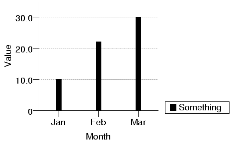
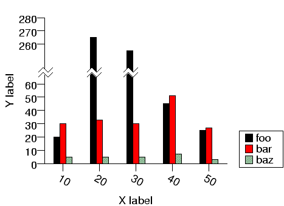

| PyChart |
| PyChart |
Attributes x_coord and y_coord specify the coordinate
systems for the area's X and Y axes. The values of these attributes
must of type coord.T. PyChart provides three popular subclasses
of coord. Both x_coord and y_coord defaults to
linear_coord.T().
ar = area.T(x_coord = linear_coord.T(), y_coord = linear_coord.T(), ...)
| data, col) |
from pychart import * theme.get_options() data = [["Jan", 10], ["Feb", 22], ["Mar", 30]] ar = area.T(x_coord = category_coord.T(data, 0), y_range = (0, None), x_axis = axis.X(label="Month"), y_axis = axis.Y(label="Value")) ar.add_plot(bar_plot.T(data = data, label = "Something")) ar.draw()
The output will look like the below:

All the classes described so far are derived from the coord.T class:
| ) |
coord.T object must implement the following three methods:
| dmin, dmax, interval) |
x_grid_interval (or y_grid_interval)
attribute ( see Section 6),
or None if the
attribute is omitted by the user. This method should return tuple
(MIN, MAX, INTERVAL), where MIN, MAX are the minimum and maximum values
to be displayed, and INTERVAL is the interval with which label and tick lines
are drawn.
| size, val, range) |
self.get_data_range.
| range, interval) |
You can create fancier coordinate systems by subtyping coord.T.
The below example shows how you can create a chart with ``zap'' marks.

../demos/zaptest.py
from pychart import * class zap_y_coord(linear_coord.T): # Method get_data_range is inherited from linear_coord.T. def get_canvas_pos(self, size, val, min, max): # Zap Y values between 70 and 240. # Thus, Y axis will display 0..70 and 240..280, 110 points total. if val <= 70: return linear_coord.T.get_canvas_pos(self, size, val, 0, 110) elif val <= 240: return linear_coord.T.get_canvas_pos(self, size, 70, 0, 110) else: return linear_coord.T.get_canvas_pos(self, size, val - 170, 0, 110) def get_tics(self, min, max, interval): # Don't draw tick marks between 65 and 245. tics = linear_coord.T.get_tics(self, min, max, interval) return [x for x in tics if x < 65 or x > 256] can = canvas.default_canvas() theme.get_options() data = [(10, 20, 30, 5), (20, 265, 33, 5), (30, 255, 30, 5), (40, 45, 51, 7), (50, 25, 27, 3)] chart_object.set_defaults(area.T, size = (150, 120), y_range = (0, 280), y_coord = zap_y_coord(), x_coord = category_coord.T(data, 0)) chart_object.set_defaults(bar_plot.T, data = data) bar_plot.fill_styles.reset(); plot1=bar_plot.T(label="foo", cluster=(0,3)) plot2=bar_plot.T(label="bar", hcol=2, cluster=(1,3)) plot3=bar_plot.T(label="baz", hcol=3, cluster=(2,3)) ar = area.T(loc=(250,0), x_axis=axis.X(label="X label", format="/a-30{}%d"), y_axis=axis.Y(label="Y label", tic_interval=10)) ar.add_plot(plot1, plot2, plot3) ar.draw() for x in (ar.x_pos(10) - 20, ar.x_pos(20)- 10, ar.x_pos(30) - 10): zap.zap_horizontally(can, line_style.default, fill_style.white, x, ar.y_pos(65), x+16, ar.y_pos(65) + 4, 4, 4)
| PyChart |